课程简介
课程介绍
Introduction
本教程主要讲解如何通过 UE 的 PCG 模块搭建自然环境的通用生态域系统，其中会讲解如何使用 HLSL 语言解决原生节点难实现的算法，配合 Cursor 高效率制作 C++ 拓展节点和常规无法实现的功能。
在这个基础上，课程会增加为了操作便捷而制作的控件工具，包括绘制曲线工具、绘制蒙版功能、快速存储与读取生态域大量参数的面板功能，以及蓝图制作的计算点数量和一键创建资产等小功能。
课程所讲解的 PCG 工具来自大量程序化生成相关工作实践，知识点会以更简单直接的方式表达所需逻辑，规避华而不实的炫技行为。教学以多个案例场景为参考，制作通用性较强的 PCG 工具，使其可以在多个场景中复用。
这套教学也为学员提供了一个关于 PCG 从零到一的完整流程生产管线，并会以项目标准讲解制作过程中如何优化性能消耗，以及如何用 AI 编写 C++ 代码，帮助技术美术跨过更高阶的工具开发门槛。
98课时 Lessons
98h总时长 Duration
UE5PCG 模块核心
TA技术美术进阶
效果模块
效果展示
Showcase
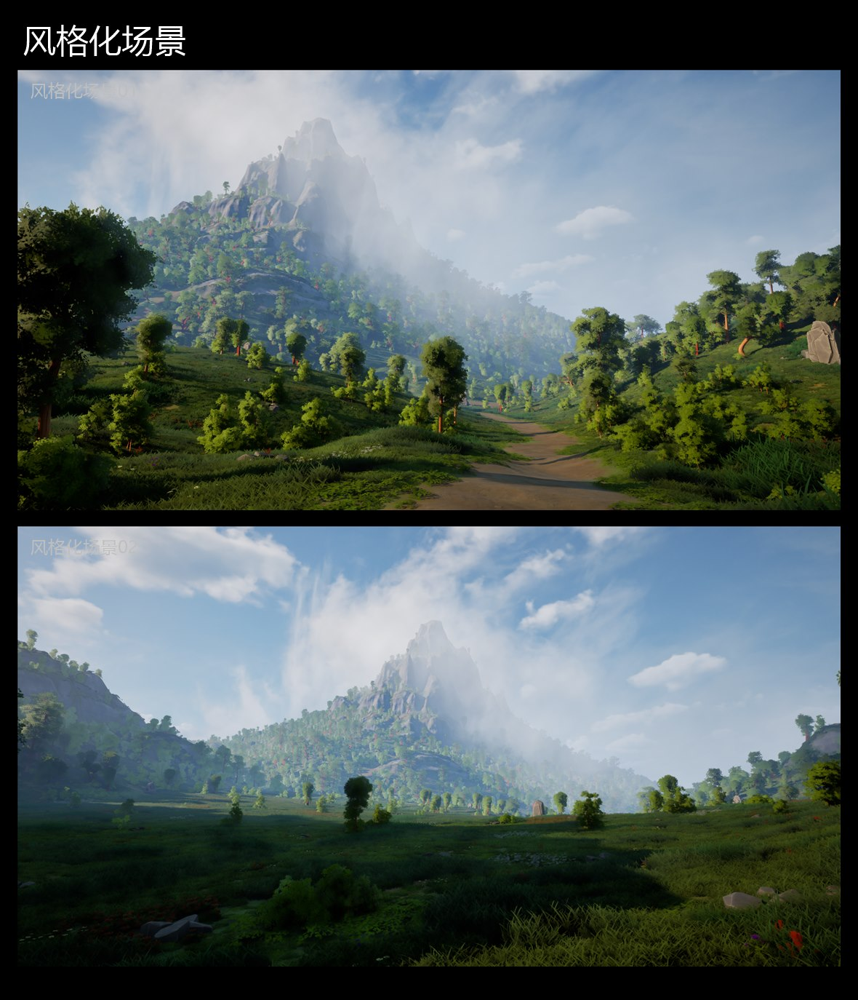
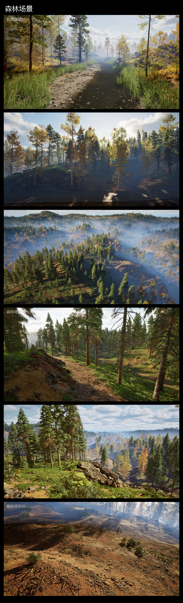
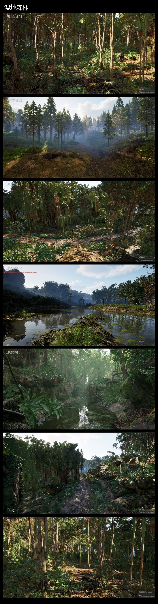
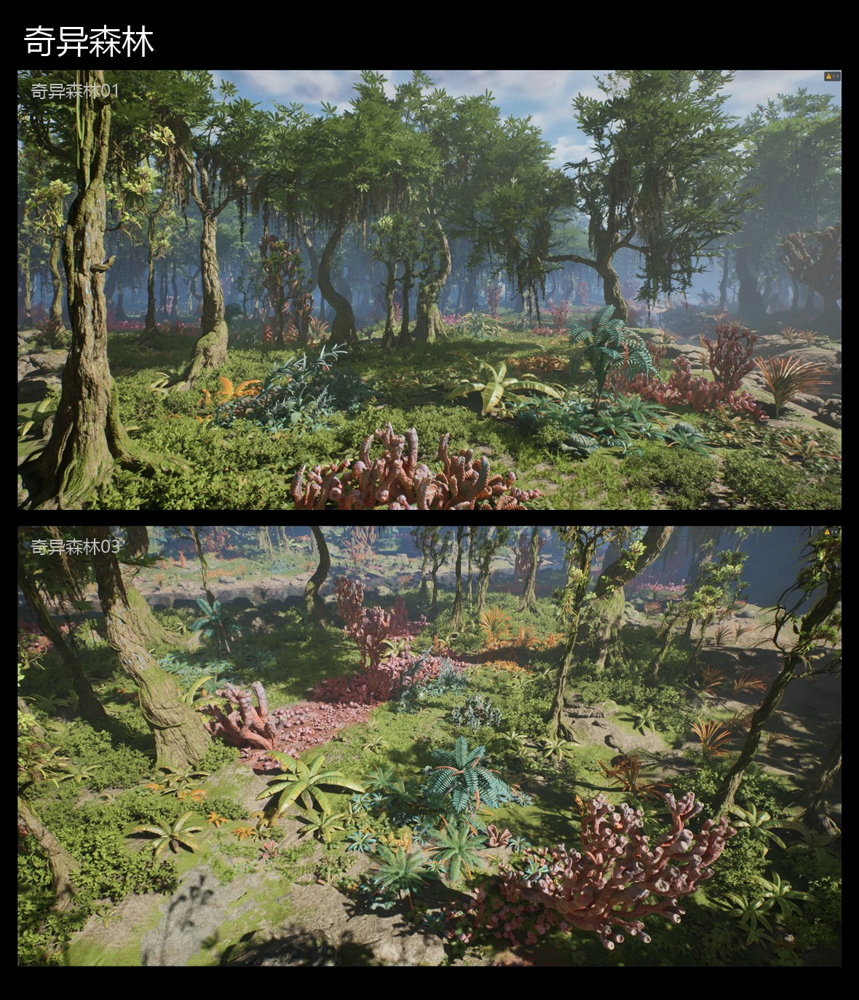
分层生成
Layered Generation
分层生成的管理系统，具有规避和ABC层级适配逻辑
PCG 绘制笔刷
Brush Tool
提供导入贴图二次绘制和接入PCG原生笔刷系统
技术模块
技术展示
Technical Module
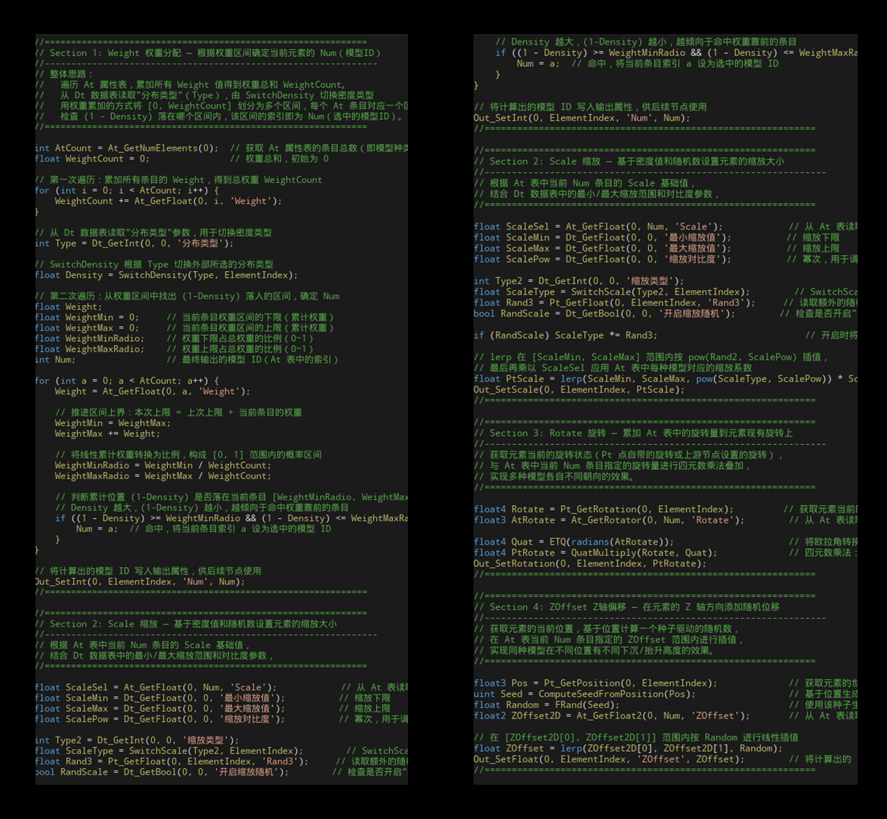
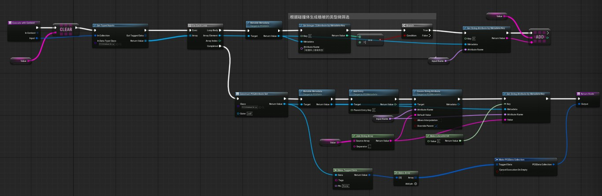
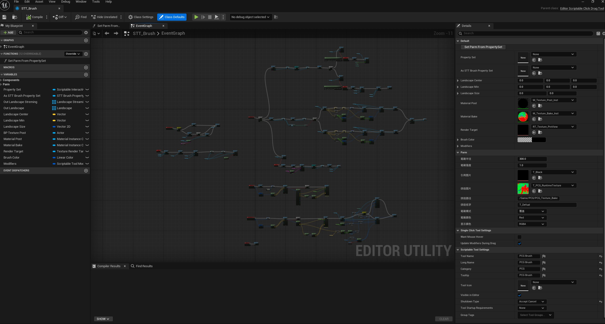
制作流程
制作流程
Workflow
构建PCG Biome系统的基本框架
适配外部曲线和BoundBox等，创建PCGGraph的基本环境
构建PCG Biome系统的基本框架
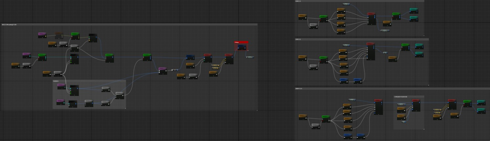
PCG Graph里构建通用生态域逻辑
构建生态循环系统，使资产可以无限叠加细化，创建通用子图等
PCG Graph里构建通用生态域逻辑
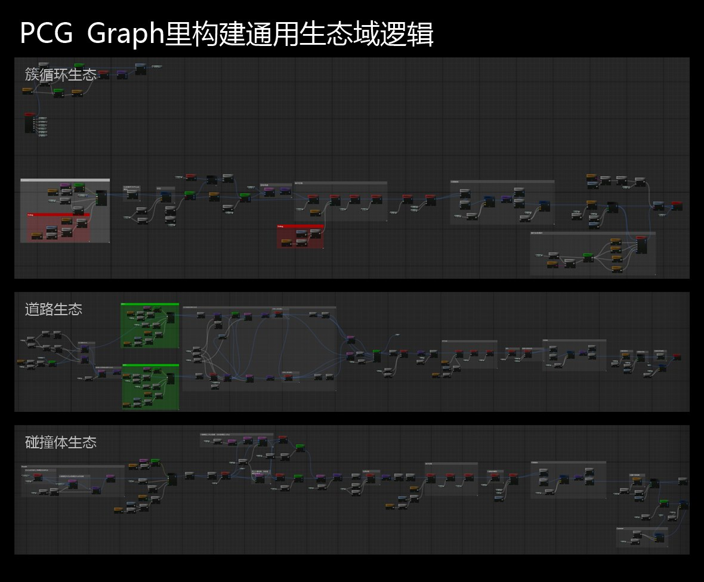
使用AI制作PCG内部拓展cpp节点
使用ai制作cpp拓展节点达到最佳运算速度
使用AI制作PCG内部拓展cpp节点
使用Scriptable制作PCG的曲线工具
将PCG接入Scriptable里使其可以在窗口进行鼠标交互功能
使用Scriptable制作PCG的曲线工具
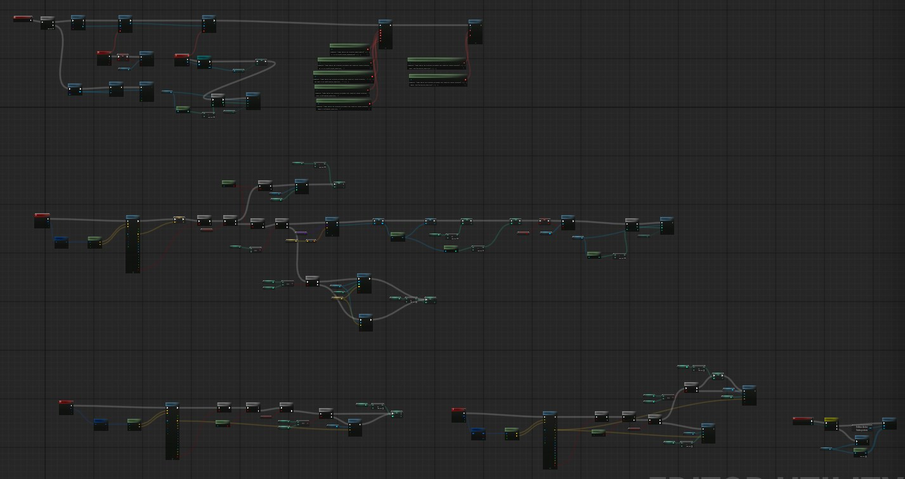
制作用于Json储存PCG数据的资源管理器
使用控件将参数储存成JSON快速读取写入
制作用于Json储存PCG数据的资源管理器
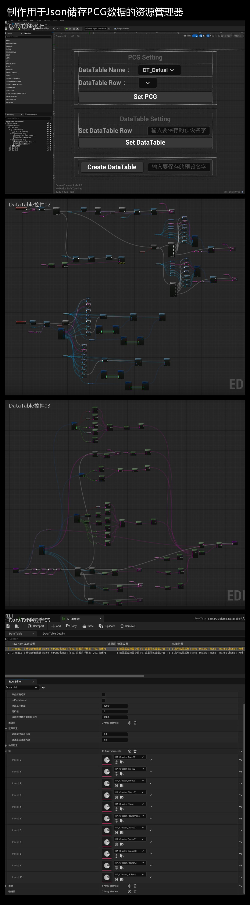
EUW控件制作针对PCG的实用功能，如笔刷蒙版、计算植被数量、批量创建DataAsset
多个操作空间辅助PCG的操作更加便捷
EUW控件制作针对PCG的实用功能
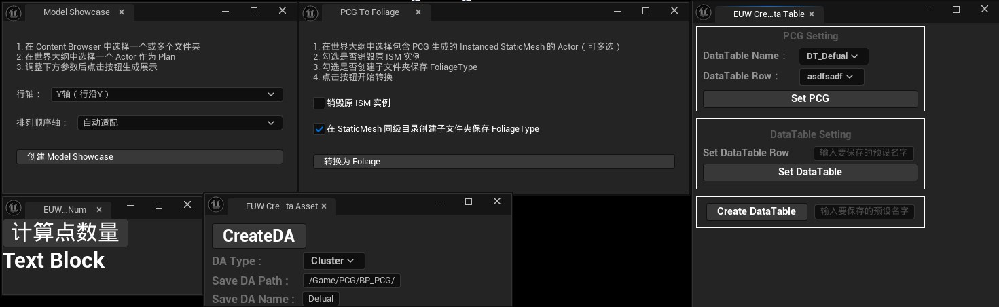
功能测试及Debug和性能优化
对PCG性能进行分析和Debug，详细拆解其原因将逻辑进行梳理
功能测试及Debug和性能优化
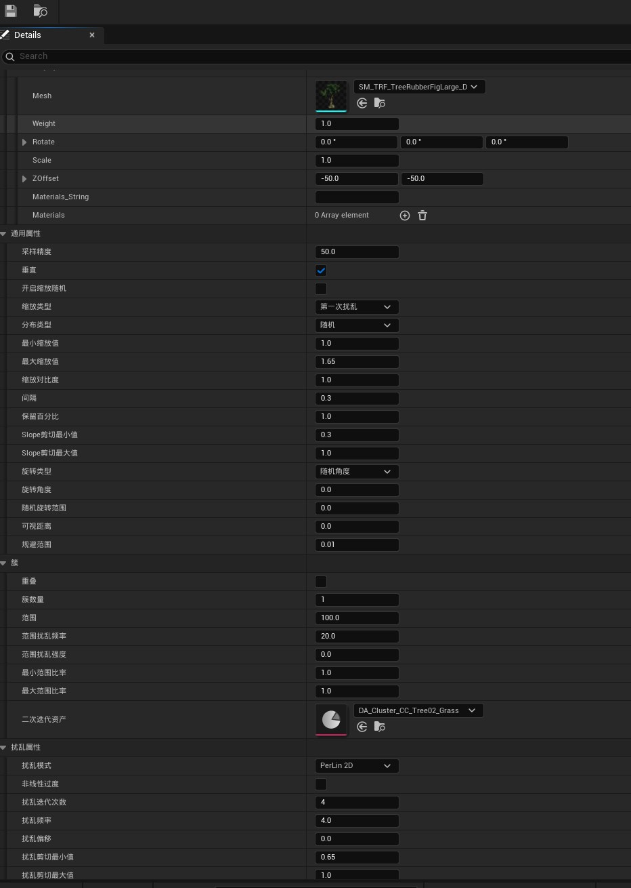
案例制作
进行案例的实际操作，对调试参数进行详细说明
案例制作